注：坦桑尼亚别的一些写到一半还没发，先发这个吧
现在是爬山当天的4:43am，我醒了以后心里惴惴不安，虽然还是有点困，但还是睡不着。
我到底能不能登顶呢？我会不会有危险呢？
有危险应该是不会，会有导游保护我的。
而登顶确实说不好。
在我出发前，dwj跟我说过他看到很多人都止步于4000米以上的区域，因为会有严重的高原反应，尤其是体型比较大的。
不过担心无法登顶也没有用，还不如好好睡觉。改变自己能改变的，接受不能改变的。
我的体质是无法改变的，担心也没有用。我的身体状态是可以改变的，休息得更好会有帮助的。
睡吧。
7:30闹钟响了，因为接下来有8天不能洗澡了，所以我赶紧在早上再洗了一次。把昨晚剩下没打包好的行李打包了一下。我的两个行李箱都空了，带上了所有干净的衣服，所有当初准备好的登山，御寒装备，准备上路。
导游和旅行社的人早早就等在了门口，打包花的时间比我预想的更长一点，出门的时候有点急匆匆的。我的上山导游叫zakayo，据他说这个名字是圣经里第一个登上某个山的人。旅行社的负责人叫andrew，非常精干，一只眼睛似乎有点歪，不过非常自信。他们帮我清点了出发要带的行李，从登山杖，睡袋，御寒的衣服，鞋子，雨衣，等等等等。唯一还需要带的是一些snack，这个我没带，他们说我们可以在路上买一点带上。
路上Eatl的合伙人Mattew也来了，带上了他们公司的横幅。车上还坐着我的厨子，名字叫Oscar，他们说他是我的stomach engineer，还有负责我的饮用水的，和帮我serve食物的，叫Dominic。我还有3个挑夫，帮我运食物，我的大部分的行李，帐篷，以及一个便携厕所。整个crew加起来有7个人。
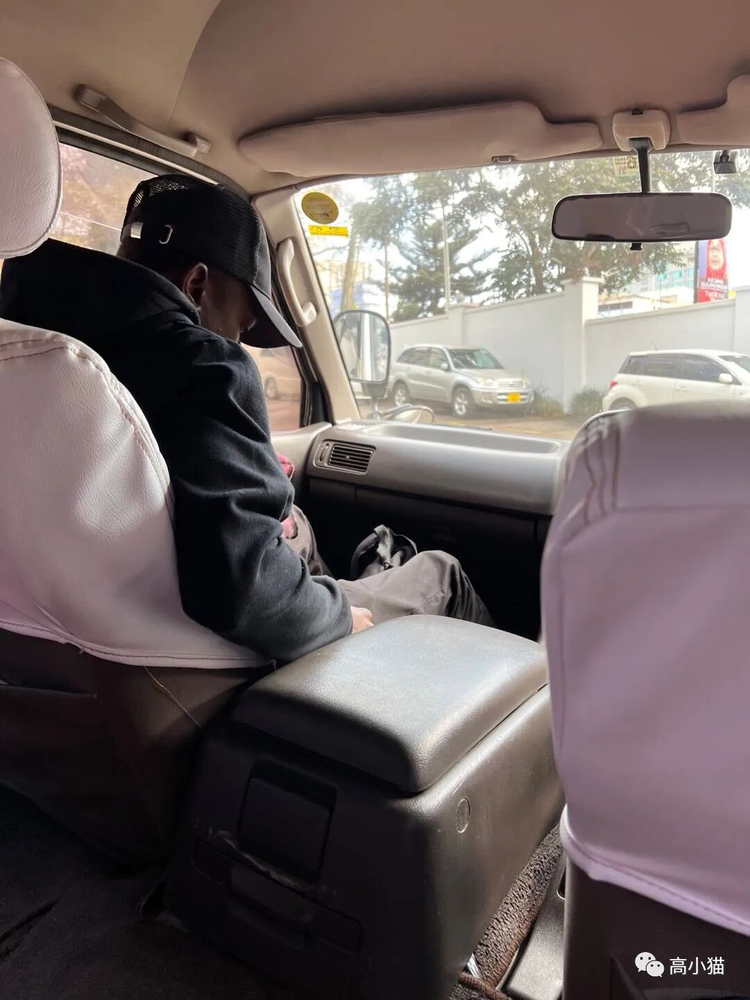
登山公司负责人andrew离正式上山越来越近了，我还是有些紧张，不过Zakayo跟我说不用担心，没问题的。看他自信的样子，我感觉可能这件事情真的没有那么难，会成功的～他跟我说爬山最重要的是swat，sugar，water，always keep clean，temperature。只要做到这些，就没问题了。
因为我告诉他们我没有买任何的snacking，sugar少了，所以在去爬山第一站的路上，他们在一个超市停了一下，让我买点吃的。坦桑尼亚这边的超市有点像国内乡下的小超市，selection很少，东西也给人一种山寨小厂做的样子。我硬着头皮买了一些坚果，饼干，蜜饯，他们还跟我说糖果很重要，让我买了一大包棒棒糖，我有一种：真的要买这么多吗？的感觉。不过我觉得还是应该听导游的，就都买下来了。
买完东西以后车又开了一小时，终于到了入口。那边有很多车已经到了，有一个挺大的亭子，很多人在坐着吃饭。
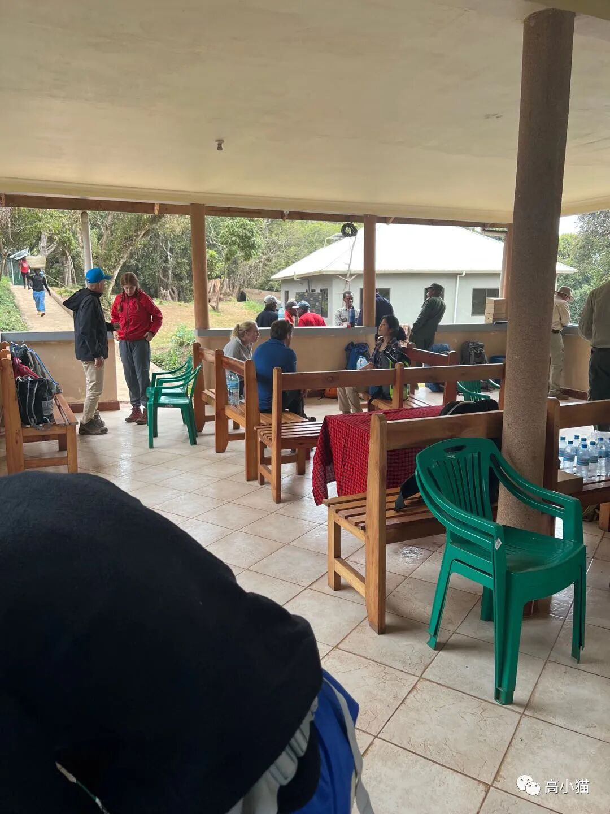
我的导游让我也去亭子里等着，还给我一个lunchbox让我吃。lunchbox里有一个油炸的面团球，外面看得出有鸡蛋液浸过以后酥酥的边的痕迹，里面包着一个煮鸡蛋。lunchbox里还有一个苹果，一盒芒果汁（这个几乎所有的lunchbox都有，我都快吃腻了），还有一个咖喱角（有点类似粤式餐厅的那种）。
我碰到一对英国的夫妇，女生似乎对于hiking非常地不熟悉，而男生则得心应手，从他们背的包的大小也能看出来，男的背的包的体积几乎是女的的两倍大。我还碰到一个住在波兰的韩国女生，她说她是一个人来的，hiking完还会去safari，全程住帐篷。我感觉我要是自己是一个女生，可能不敢独自一人来坦桑尼亚这样的地方。
吃完中饭过了一会儿，我的导游就跟我说可以出发了。第一天的行程主要是在一个树林里走，地上稍微有点泥泞，但是泥还一般，不是很粘鞋。我的导游跟我说第一天的行程非常简单，只有3mile（4.8km）。我的负重也不大，估计4-6kg吧。不过因为海拔是从2389米走到2789米，海拔还是稍微有一点的。我一开始走得稍微有点喘，不过很快在导游的带领下我就把速度放慢，然后就没有那么喘了。不时有挑夫超过我们两个，他们背着很重的东西，通常是一个很大的包，加上头上顶着的一个东西。
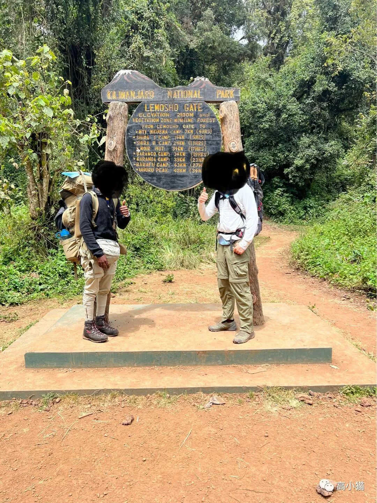
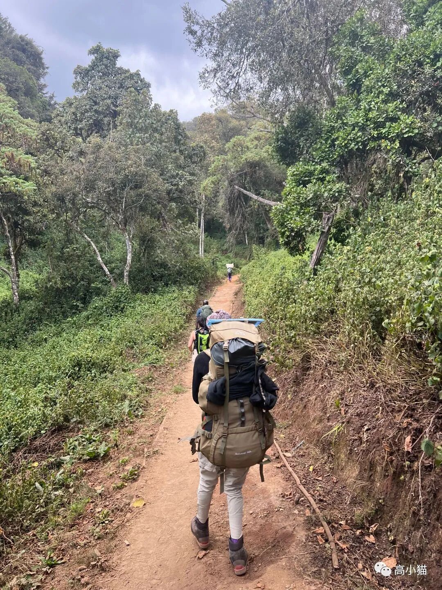
走到后半程的时候我的大腿稍稍有些觉得发酸，但是那个时候我的导游跟我说才过了半程。其实那个时候离camp已经很近了。他跟我说是希望给我一个surprise。走到的时候我还挺开心的。第一天就这样波澜不惊地度过了。
我们是大约5:00pm到camp的，天还没暗。这时我意识到我还有大把的时间可以写文章，而不是我原以为的每天都累的半死，倒头就睡。Zakayo跟我说6:30pm才吃晚饭。我就在附近转了一圈。整个营地估计有30-60个帐篷，各种形状和大小都有。我住的帐篷是一个一室一厅的套间。一个地方睡觉，里面铺着一个床垫和我的两个包，外面搭了一张小桌子，上面放着各种果酱，花生酱，巧克力冲剂，辣椒酱等等东西，还有我在超市买的各种零食。
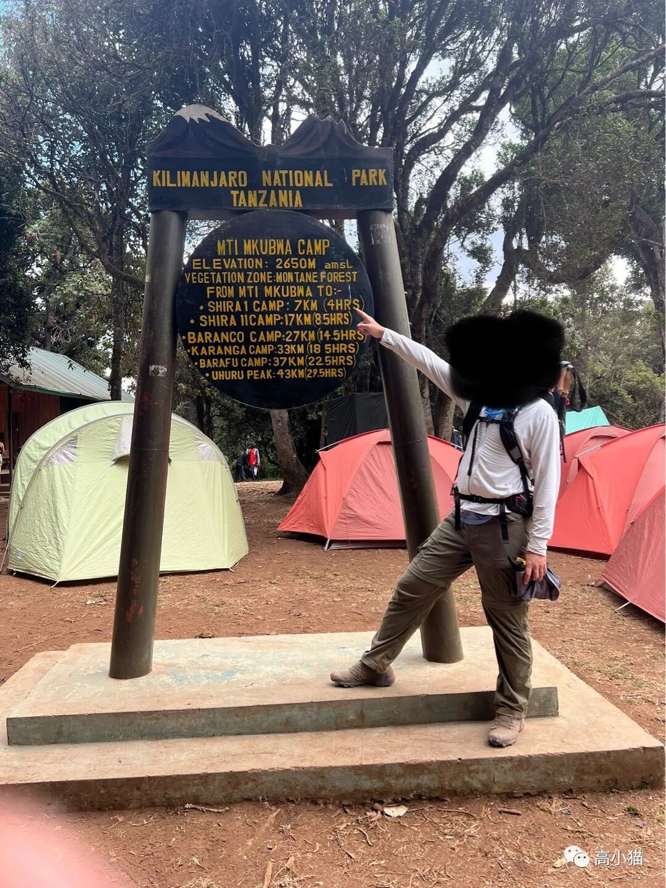
晚上吃的晚饭真的不错，一个蔬菜汤，一个红烧茄汁鱼一样的菜，一个土豆泥，最后还有香蕉和牛油果。吃完饭以后zakayo给我测了指标，我的血氧92%，心率85，还算不错。

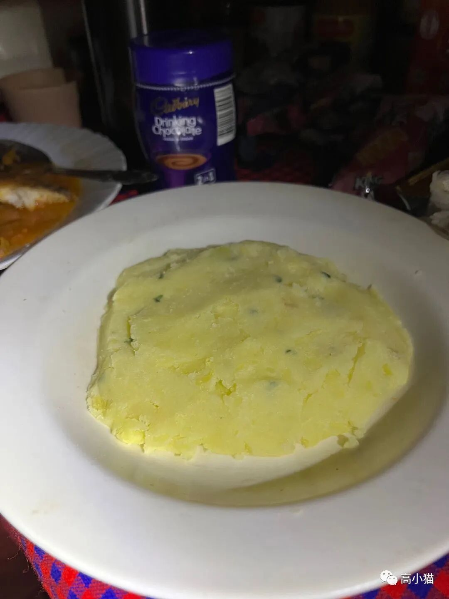
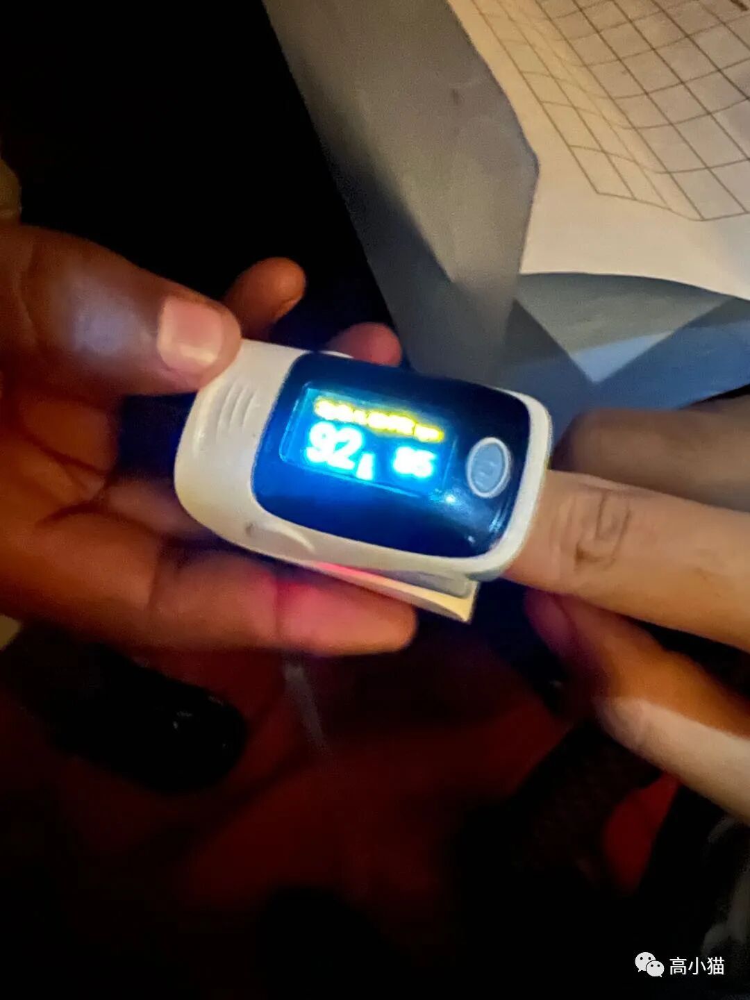
吃完饭以后我在外面晃荡，找人聊天。外面真的很冷，冷到受不了了我就回睡袋睡了。明天6:30am就要起床，还是应该早点睡。
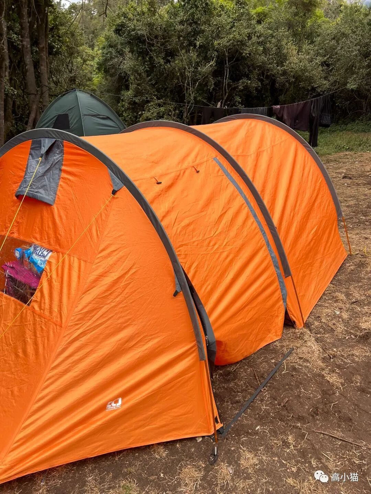
我的单人帐篷，一室一厅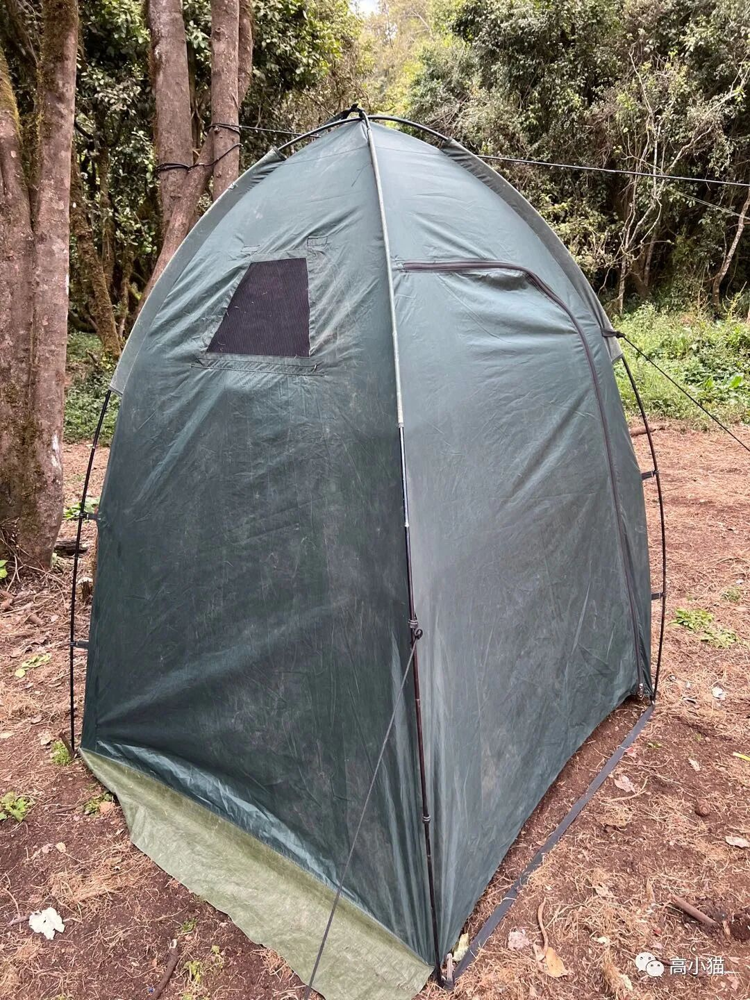
我的单人厕所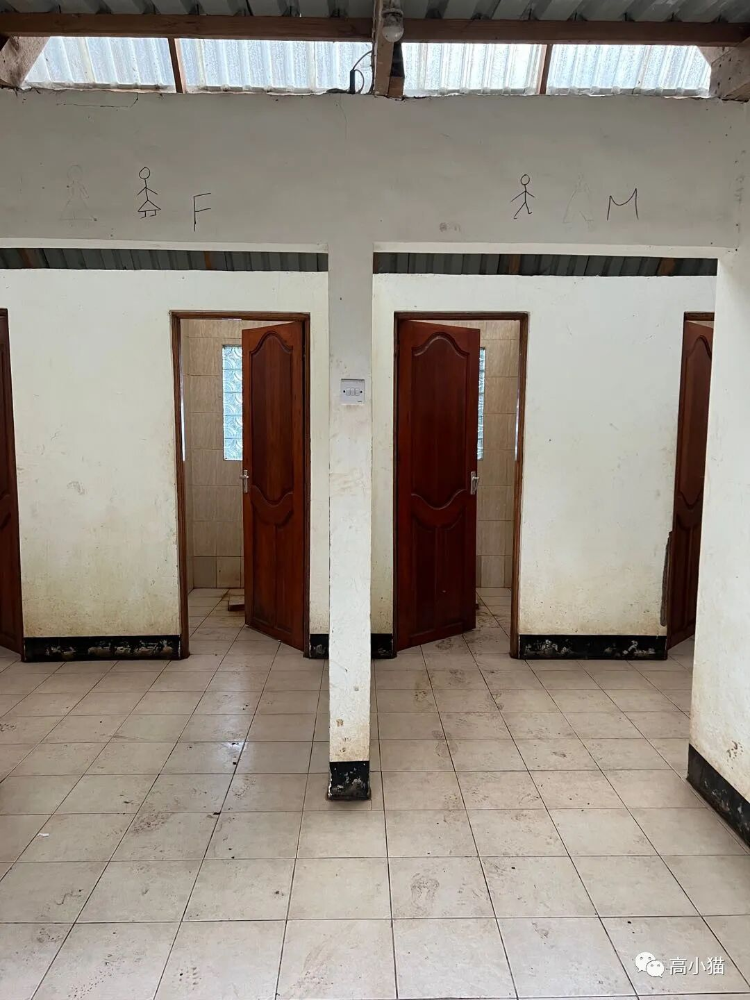
公厕，很臭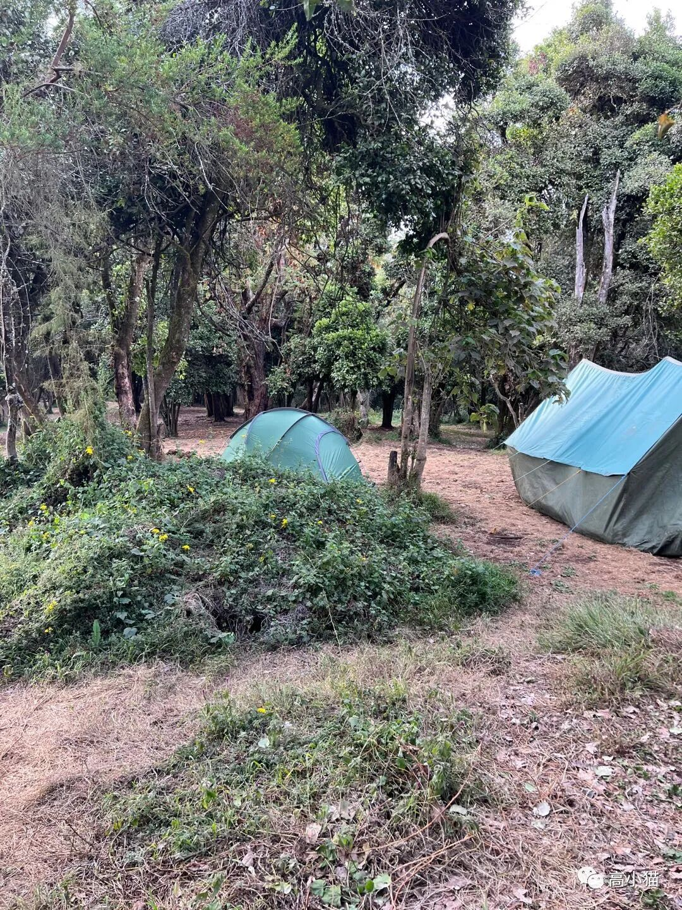
帐篷群的尽头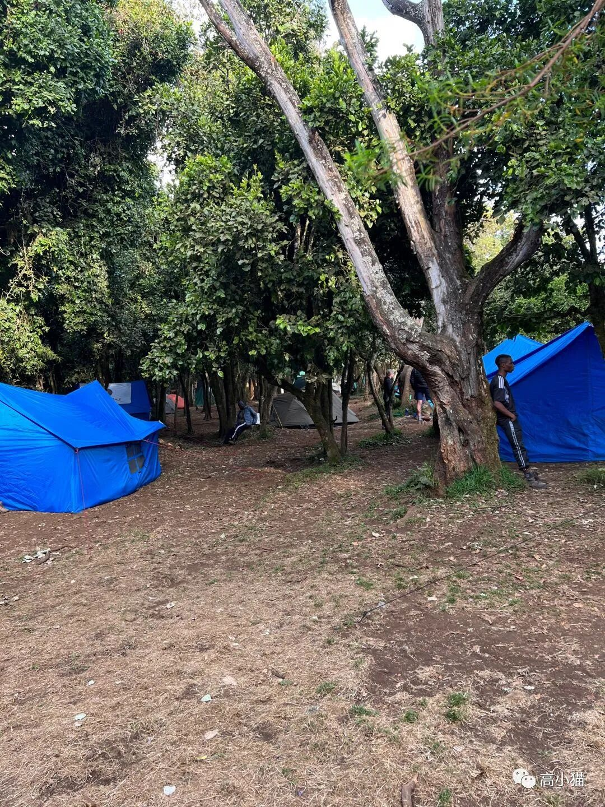
另外的一些帐篷